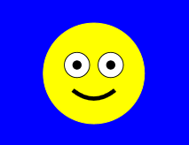

Edellisissä harjoituksissa suunniteltiin oma XML-tiedosto. Lataa tämä tiedosto PHP:n avulla näkyviin. Voit esittää tiedot sopivassa muodossa, kuvat img-elementeissä ja linkit a-elementeissä.
Tee characters-taulustasi XML-tiedosto. Voit käyttää DOMDocument tai SimpleXML-tapaa tiedoston luonnissa.
Tee yksinkertainen XML-tiedosto yhteystiedot.xml. Tiedostossa esitetään yhden henkilön yhteystiedot.
<tiedot> <nimi>Testi Henkilö</nimi> <lahiosoite>Turmiontie 13</lahiosoite> <postiosoite>13720</postiosoite> <postinumero>Hattula</postinumero> </tiedot>
Tallenna tiedosto samariumille xml-kansioosi.
Tarkoitus on tehdä PHP-sivu joka lukee xml-tiedoston tiedot html-lomakkeelle. Käyttäjä voi päivittää lomakkeen tietoja. Lomakkeella tulisi olla submit-painike joka tallentaa muuteut tiedot taikaisin xml-tiedostoon.

Suunnittele materiaalin esimerkkien avulla svg-kuva hymio.svg. Katso sitä ennen materiaali svg-kuvista.
Suun voi piirtää esimerkiksi path -elementin avulla